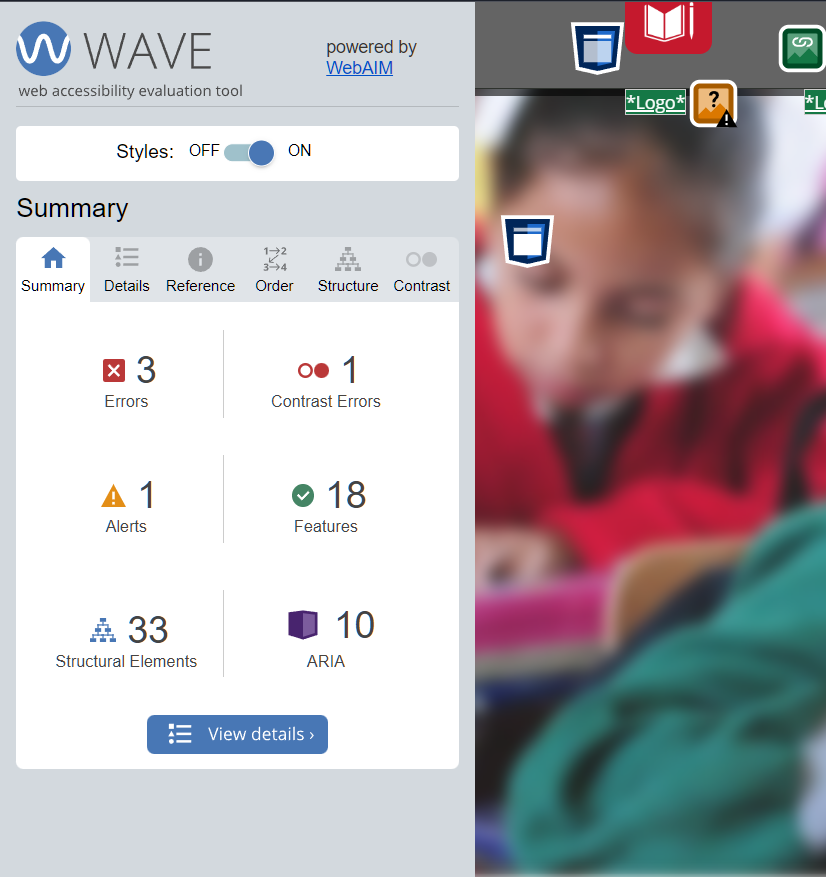
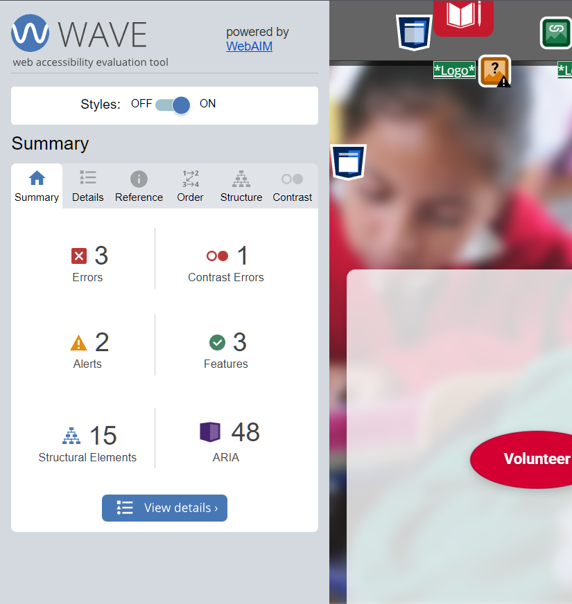
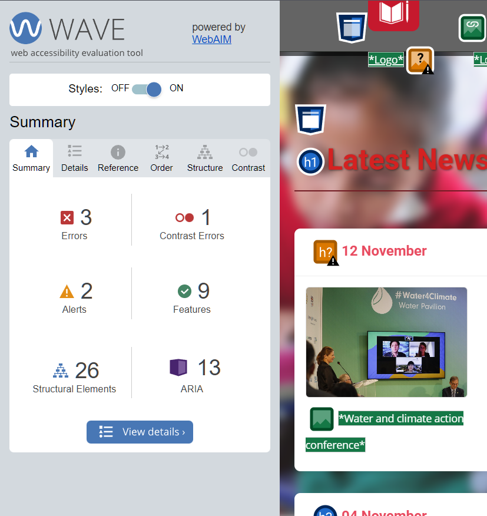

User Profile Page
Technical Description
The user profile page shows the summary of a sample user's imfromation, which contains personal and profwessional imfromation, including their biography, skills, goals, challenges, work experience, and alignment with commitment to UN Sustainable Development Goals.
- Techniques & Technologies Used:
- HTML: Structured layout with sections for profile details, goals, interests, and a contact form.
- CSS: Styled using a grid layout for responsiveness, with hover effects and smooth transitions.
- JavaScript: Implemented a dynamic calendar that displays upcoming volunteer missions and validated the contact me section under standard validations.
Accessibility
- Semantic HTML: Used appropriate tags for headings, lists, and sections.
- Contrast & Readability: Ensured text is easy to read against the background.
- Alternative Text for Images: Provided descriptive alt text for all images, making the content accessible to screen reader users
Profile Image

Link to the validation page
Include a link to the validation page, use the marker to jump to the corresponding section of the validation page.
Link to the page
Site Page
Technical Description
The sitemap page visually shows the site structure with interactive nodes linked by lines. Each node represents a page or section, is clickable, and has a tooltip. It uses SVG graphics for scalability and smooth animations for a more engaging experience.
- Techniques & Technologies Used:
- HTML: Used SVG for the map and <a> tags to make each node clickable.
- CSS: Custom colors, animations, and a responsive layout for all screen sizes.
- JavaScript: Enabled keyboard navigation for easier access by pressing "Enter" or "Space" on nodes.
Accessibility
- Semantic HTML: The page uses appropriate HTML elements,including <a> for links, <circle> for nodes, and <line> for connections lines, ensuring it is accessible to screen readers.
- Contrast & Readability: Ensured text is easy to read against the background.
- Keyboard Navigation: Users can navigate through the sitemap using the keyboard alone. Pressing the "TAB" and "Enter" keys will activate the links.
- Alternative Text for Images: Descriptive alt text is included for each interactive node.
Sitemap Image

Link to the validation page
Include a link to the validation page, use the marker to jump to the corresponding section of the validation page.
Link to the page
Content Page (News)
Technical Description
The content page displays latest news about UN Sustainable Development Goals, featuring key stories and global efforts addressing these issues.
- Techniques & Technologies Used:
- HTML: Structured with sections for headlines, summaries, images, and links using semantic elements to enhance organization and clarity.
- CSS: tyled for responsiveness with media queries, hover effects, and smooth scrolling. A "Go to Top" button is implemented using only HTML and CSS, with smooth transitions for appearance and an accessibility-friendly aria-label.
Accessibility
- Semantic HTML: The page uses appropriate HTML elements, including
<a>for links,<circle>for nodes, and<line>for connection lines, ensuring it is accessible to screen readers. - Contrast & Readability: Text is styled with sufficient contrast against the background to ensure it is readable by users with visual impairments.
- Alternative Text for Images: Descriptive alt text is provided for each image to assist users with visual impairments.
Content Page Image

Link to the validation page
Include a link to the validation page, use the marker to jump to the corresponding section of the validation page.
Link to the page
Include a link to the actual page you describe.
Challenges and Lessons Learned
1. Challenge: Ensuring responsiveness across different devices was tricky.
- Solution: I used CSS media queries and flexible grid layouts to ensure the content adapts to various screen sizes.
- Lesson Learned: Responsive design is crucial, and testing early on different devices helps avoid layout issues later.
2. Challenge: Making the pages fully accessible was challenging, especially with ARIA roles and alt text for images.
- Solution: I followed WCAG guidelines, added proper alt text, and used accessibility testing tools like WAVE.
- Lesson Learned: Accessibility needs continuous attention to ensure all users, including those with disabilities, can access the content.
Compliance
The pages I developed follow Janet regulations for web page publication in these ways:
- Accessibility: Following WCAG 2.1 guidelines, with clear headings, alt text for images, and keyboard navigability.
- Data Protection: Adhering to GDPR by ensuring privacy and consent in user data collection.
- Security: Implementing secure data submission and external links opening in new tabs.
- Usability: Ensuring responsive design for all devices and easy navigation, including a "Go to Top" button.
References
- iStock, 2025, iStock (Accessed: 25 Feb 2025).
- United Nations, Communications Material (Accessed: 26 Feb 2025).
- United Nations, SDGs News (Accessed: 28 Feb 2025).
- Freepik, Freepik (Accessed: 7 March 2025).